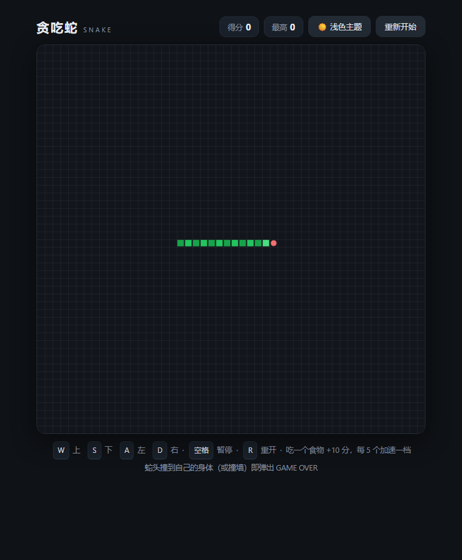
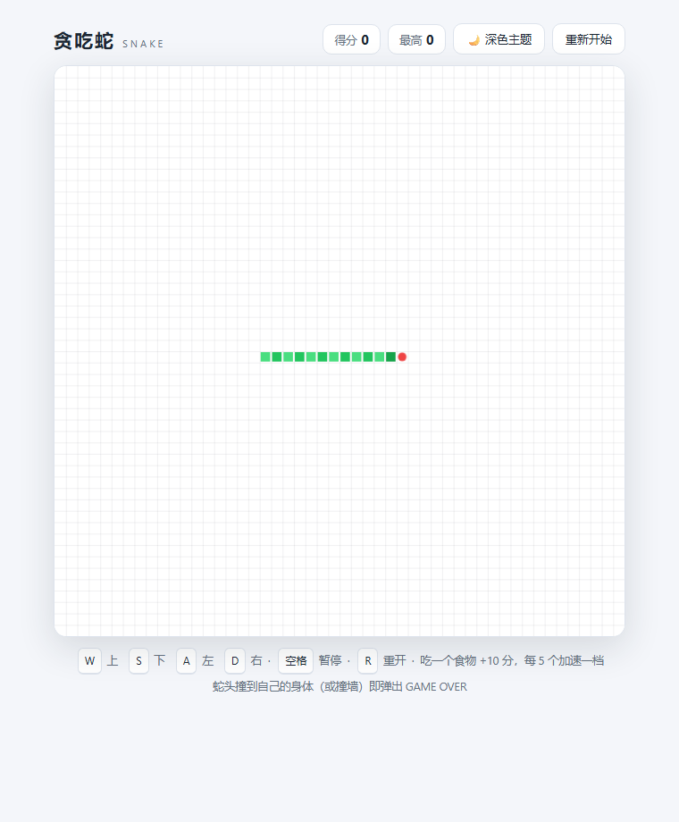
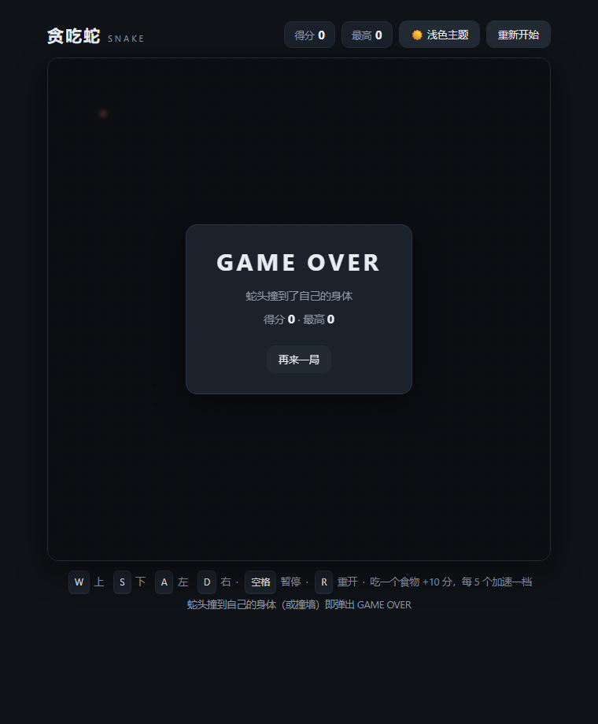
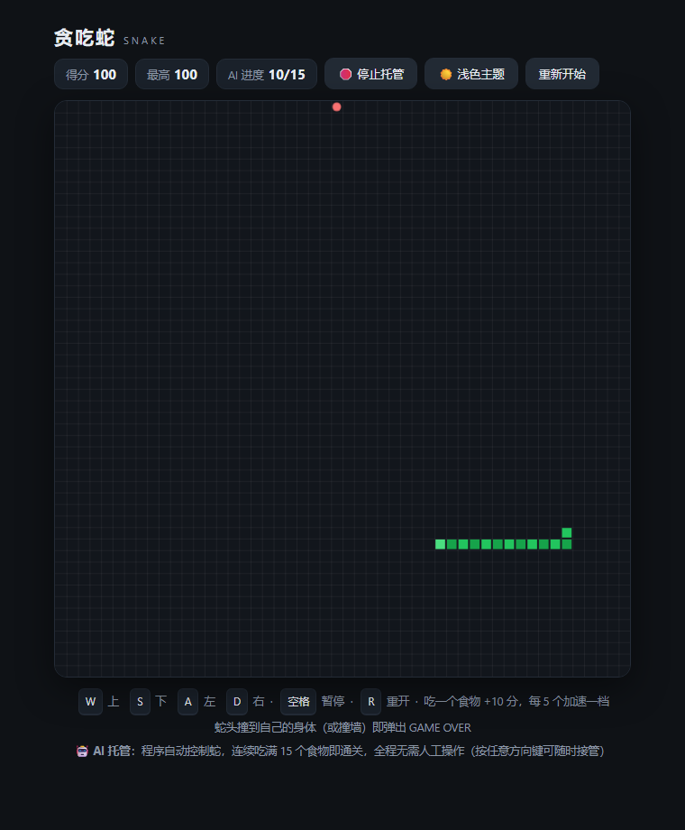
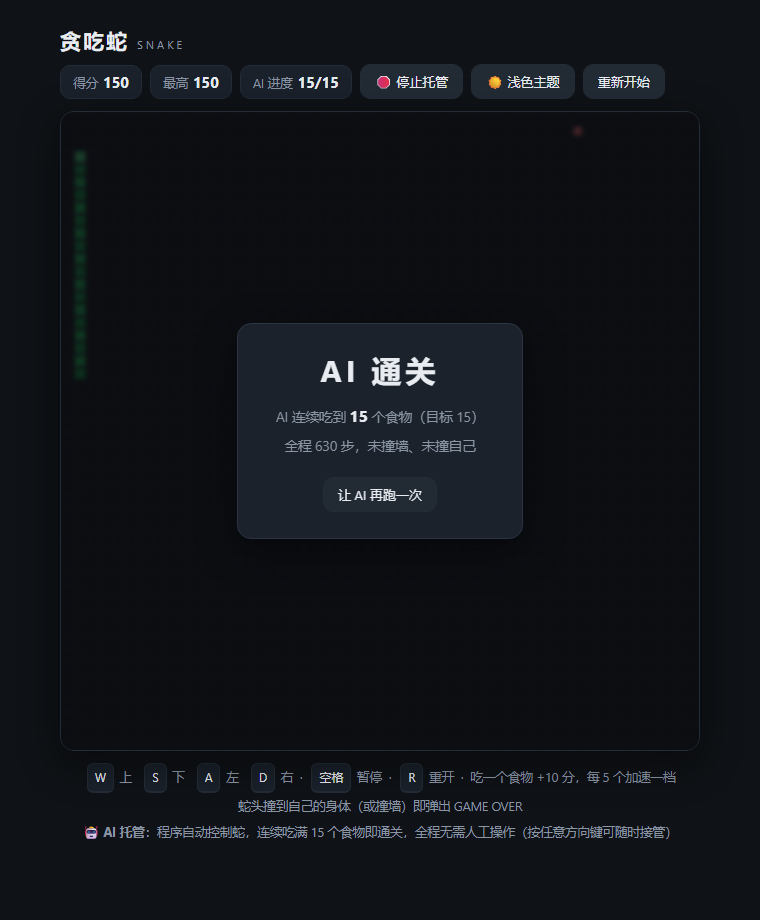

贪吃蛇（纯前端 · 单文件 · 无框架）
一个双击即可在浏览器中打开的贪吃蛇小游戏。全部代码（HTML + CSS + 原生 JavaScript）内联在 snake.html 一个文件里，不依赖任何框架、构建工具或网络资源。
0. 文件结构
snake-game/
├── snake.html 游戏本体（单文件，双击即玩；内置 AI 自动托管）
├── README.md 本文档
├── publish_homepage.mjs 发布脚本：派生「基础版（无 AI）」与「AI 托管版」到个人主页仓库
└── verify/ 验证脚本与截图（可选，不影响玩游戏）
├── harness.mjs 共用测试环境（把页面里的脚本装进最小 DOM 桩里真实执行）
├── verify.mjs 阶段一 / 阶段二 逻辑自动化测试（Node.js 运行）
├── ai_test.mjs 阶段三 AI 托管批量测试：50 局随机食物序列（Node.js 运行）
├── ai_browser.ps1 阶段三 真实浏览器端到端验证（无头 Edge / Chrome）
├── check_shots.py 截图像素校验（Python + Pillow 运行）
├── theme-dark.png 深色主题截图
├── theme-light.png 浅色主题截图
├── gameover.png GAME OVER 弹层截图
├── ai-play.png AI 托管进行中截图
└── ai-win.png AI 连续吃满 15 个食物通关截图1. 需求对照表
| 需求 | 实现情况 | 代码位置 |
|---|---|---|
| 页面简洁、HTML 格式、纯前端单文件、无框架、双击即开 | 全部内联于 snake.html，无任何外部请求 | 整个文件 |
| 棋盘为 50 × 50 格 | COLS = 50, ROWS = 50，每格 12px，画布 600 × 600 | 常量区 |
| 上 W / 下 S / 左 A / 右 D | KEY_DIRS 键盘映射（另兼容方向键，不替代 WASD） | 事件绑定 |
| 蛇头碰到自己的身体 → 弹出 GAME OVER | step() 自撞判定 → gameOver() 弹层标题为 GAME OVER | 核心逻辑 |
| 主题切换，至少 2 套配色（深色 / 浅色） | THEMES 表内置 dark / light 两套完整配色（19 个颜色变量） | 主题表 |
| 一键切换即时生效 | 顶部按钮 toggleTheme() → 覆盖 CSS 变量 + 立即重绘画布 | applyTheme() |
| 刷新后保留所选主题 | localStorage['snake-theme']，启动时读取 | applyTheme() / 启动逻辑 |
| AI 自动控制蛇，连续吃完 15 个食物不死（不撞墙 / 不撞自己），全程无需人工操作 | aiChooseDirection()：每步试走 4 方向 → 安全性（追得回蛇尾 + 可达空间 ≥ 蛇长）优先 → 再用 BFS 最短路靠近食物；吃满 15 个自动弹「AI 通关」并停止 | AI 决策段 / startAutoPlay() / aiWin() |
| README 附提示词记录、阶段一 / 二 / 三实现与验证 | 本文第 3、4、5、6 节 | README.md |
2. 玩法
- 双击
snake.html打开 → 按 WASD（或点“开始游戏”）开局。 - W 上、S 下、A 左、D 右；空格 暂停；R 重开。
- 吃一个食物 +10 分，蛇身加长一格，每吃 5 个速度加快一档（130ms → 下限 70ms）。
- 蛇头撞到自己的身体（或撞墙）→ 弹出 GAME OVER，显示本次得分与最高分，点击“再来一局”或按 R 重来。
- 右上角按钮一键切换 🌙 深色 / ☀️ 浅色主题，即时生效，刷新后保留。
- 🤖 点「AI 托管」按钮：程序接管方向盘，自己找食物、绕开自己和墙，标题栏显示
AI 进度 N/15；连续吃满 15 个食物后弹出「AI 通关」结果面板（全程不用碰键盘）。想自己玩时按任意方向键即可立刻接管。
3. 阶段一：核心玩法
3.1 怎么实现
- 网格与画布：
<canvas>600 × 600，50 × 50 格、每格 12px（COLS/ROWS/CELL三个常量集中定义，改一处即可调整棋盘）。每帧先铺画布底色，再画一层极淡的网格线，保证画面简洁。 - 蛇的表示：数组
state.snake，snake[0]是蛇头。step()每步把新头部unshift到数组头；没吃到食物就pop尾部，吃到就不pop，自然实现“吃食物变长”。 - 方向与防掉头：
state.dir保存当前方向，state.queue保存最多 2 个“待生效转向”。setDirection()丢弃 180° 反向与同方向重复按键，避免一帧内连按两键（如“右 → 上 → 下”）把蛇头直接送进自己脖子。 - 食物与计分：
spawnFood()在全部空格中随机取一格；吃一个 +10 分；每 5 个食物把步进间隔从 130ms 逐档递减到下限 70ms，越吃越快。 - 碰撞判定（需求核心）：
- 蛇头坐标与身体任一格重合 →
gameOver('蛇头撞到了自己的身体')→ 弹层标题显示 GAME OVER，附得分、最高分与“再来一局”按钮；判定范围在“将要吃食物”时包含全部身体（因为蛇会变长），不吃食物时排除将要移走的尾巴，与真实运动一致； - 撞墙 → 同样弹 GAME OVER（经典规则；需求只明确要求撞自己，见第 7 节）。
- 蛇头坐标与身体任一格重合 →
- 流程控制：
setTimeout自调度tickFn()驱动游戏循环，支持暂停（空格）与重开（R / 按钮）；结束时清掉定时器，不残留后台计时。
3.2 怎么验证
(a) 逻辑自动化测试（verify/verify.mjs）— 把 snake.html 里的 <script> 抽出来，在最小 DOM 桩里真实执行，逐条断言，共 19 项：
node verify\verify.mjs # 需要 Node.js；无 Node 时可跳过，不影响游戏覆盖点：棋盘 50×50 ✓ / 初始蛇长 3、蛇头居中 ✓ / 食物在空格内 ✓ / 每步前进 1 格 ✓ / W·S·A·D → 上·下·左·右 ✓ / 禁止 180° 掉头、两连拍反向丢弃 ✓ / 吃食物蛇长 +1、得分 +10、食物刷新、分数显示更新 ✓ / 蛇头撞身体 → 结束，且弹层标题 === 'GAME OVER'、弹层可见、显示得分 ✓ / 撞墙 → GAME OVER ✓ / R 重开复位 ✓。 实际运行结果：19 项全部通过。
(b) 真实浏览器渲染验证 — 用无头 Edge 打开游戏的测试钩子页面截图，再用 verify/check_shots.py 做像素级校验：
# 重新生成截图（Chrome / Edge 任一均可）
msedge --headless=new --disable-gpu --window-size=760,920 --virtual-time-budget=1500 `
--screenshot=verify\gameover.png "file:///C:/.../snake-game/snake.html?theme=dark&demo=gameover"
python verify\check_shots.py # 需要 Pillowverify/theme-dark.png：暗色调整体、有绿色蛇身、有红色食物；verify/theme-light.png：亮色调整体、有绿色蛇身、有红色食物；verify/gameover.png：屏幕中央出现弹层面板，面板内有文字像素（GAME OVER 文案本身由 (a) 的断言精确校验）。 实际运行结果：9 项像素校验全部通过（深色图平均亮度 < 80，浅色图 > 180）。
(c) 手动验证清单（双击 snake.html）：
测试钩子说明：
?theme=dark|light强制初始主题、?demo=play自动开始、?demo=gameover构造自撞局面， 仅用于自动化验证与截图；正常双击打开完全不受影响（不带参数即默认行为）。
4. 阶段二：主题切换 + 文档
4.1 怎么实现
- 两套完整配色：
THEMES.dark/THEMES.light各 19 个颜色变量——页面底色、正文/次要文字、卡片、按钮、画布底、网格线、蛇头、蛇身（两色交替）、食物、弹层遮罩、弹层面板、阴影。不是简单“换个背景”，而是全界面 + 画布内容成套换色。 - 一键即时生效：页面样式全部使用
var(--xxx)，applyTheme()把主题表一次性写入:root的 CSS 变量，随后立刻draw()重绘画布 → 点击按钮瞬间整页换色（CSS 带 0.25s 过渡，视觉平滑），无需刷新。按钮文案同步变为“☀️ 浅色主题 / 🌙 深色主题”。 - 刷新后保留：
applyTheme(name, save)把所选主题写入localStorage['snake-theme']；启动优先级为?theme=测试参数 →localStorage→ 默认深色。localStorage 用try/catch包裹，个别浏览器在file://下禁用时自动退化为“本次会话内切换”，不会报错。 - 文档：README 按要求记录阶段一 / 阶段二的实现与验证方法、给 AI 的关键提示词原文与迭代过程（本文第 6 节）。
4.2 怎么验证
(a) 逻辑自动化测试（verify/verify.mjs 后半段，8 项）：
默认深色 ✓ → 点击按钮一键切到浅色且 data-theme 属性同步 ✓ → localStorage 写入 light ✓ → 用同一份 localStorage 重新加载脚本（等价于刷新）后仍为浅色 ✓ → 反向切回深色后刷新仍为深色 ✓ → 两套配色变量数量一致（各 19 个，无缺项）✓。
(b) 截图像素校验（verify/check_shots.py）：深/浅两张截图的平均亮度、蛇身与食物颜色、两图差异显著性，见 3.2(b)。
(c) 手动验证清单：
| 深色主题 | 浅色主题 | GAME OVER 弹层 |
|---|---|---|
 |  |  |
5. 阶段三：AI 自动托管（让程序自己玩）
需求：*自己设计一个程序来玩这个游戏 —— AI 自动控制蛇，连续吃完 15 个食物不死（不撞墙、不撞自己），全程无需人工操作。*
5.1 怎么实现
决策算法（aiChooseDirection()，每一步现算一次，纯确定性、不做随机探索）：
- 试走 4 个方向：对每个方向先在当前局面上模拟走一格（
tryMove()），撞墙或撞到自己身体的方向直接淘汰 —— 所以 AI 从机制上就不会主动撞墙 / 撞自己；不吃食物时允许走进“蛇尾马上要让出”的那一格，与真实运动规则一致。 - 算两个安全指标（
analyzeSpace()，BFS +Uint8Array位图，50×50 网格每步耗时毫秒级）：tailOk：试走之后蛇头还能重新追到自己的尾巴 —— 防止把自己关进死角；space：试走之后蛇头可达的空格数 —— 要求space ≥ 蛇长，保证装得下整条蛇。
- 择优（
aiBetter()）：- ① 安全优先：安全走法一律优于不安全走法；
- ② 再尽量靠近食物：用 BFS 算到食物的最短步数，取更小的（这一步让 AI 持续得分）；
- ③ 空间更大更稳：都安全且距离相同时，选可达空间更大的；
- ④ 尽量少转向：完全并列时保持当前方向，避免原地抖动。
- 兜底：若四个方向都不安全（极端局面），选可达空间最大的一步；若全部非法，保持原方向。
- 达标即停：吃到第 15 个食物时
aiWin()停止游戏循环并弹出「AI 通关」面板（显示食物数、总步数、蛇长）—— 也就是说“不死”不是靠运气多活一会儿，而是明确以 15 个食物为终点。
接入方式：AI 只是给游戏换了个“方向盘”，玩法规则一行没改 —— step() 里若 state.auto 为真，就用 aiChooseDirection() 的结果替代键盘输入；碰撞判定、得分、GAME OVER 弹层全部走原逻辑。界面上新增「🤖 AI 托管」按钮（再点一次或按任意方向键即人工接管）与「AI 进度 N/15」徽标。
机器可读状态：每帧把 data-state（idle / playing / ai-running / ai-won / over）、data-foods、data-ai-steps、data-snake-len 写到根元素上，供自动化脚本直接断言（人类游玩完全无感）。
5.2 怎么验证
(a) 批量随机测试（verify/ai_test.mjs，18 项）—— 用可复现的随机种子跑 50 局不同食物序列：
node verify\ai_test.mjs- 每局都从 3 格蛇开始，只允许 AI 决策：脚本把按键模拟函数替换成“一旦调用立即报错”，从代码层面杜绝人工操作；
- 每走一步都校验局面合法性（蛇头在界内、蛇身无重叠、得分与食物数同步），任何一步撞墙 / 撞自己都会被立刻抓住；
- 断言 50 局全部
foods === 15、over === false、结束时蛇长恒为 18、得分恒为 150； - 实测步数：最少 358 步、平均 495.8 步、最多 661 步；
- 另含：同一种子两次运行结果完全一致（决策可复现）、通关弹层 / 进度徽标 / 自动停止、
?demo=ai打开即自动开局。
结果：18 项全部通过。
(b) 真实浏览器端到端（verify/ai_browser.ps1）—— 让无头 Edge 打开 ?demo=ai，用页面自身的定时循环真实跑完，再把真实 DOM dump 出来断言：
powershell -ExecutionPolicy Bypass -File verify\ai_browser.ps1实测输出（一次真实运行，全程零人工操作）：
[OK] 打开页面后 AI 自动开局并达成目标（data-state="ai-won"）
[OK] 吃掉的食物数 = 15（data-foods）
[OK] 蛇长 = 18（data-snake-len）
[OK] 屏幕得分 = 150（score 元素）
[OK] 全程没有出现 GAME OVER（不撞墙、不撞自己）
[INFO] AI 共走 474 步完成目标
结果：真实浏览器验证通过(c) 截图像素校验（verify/check_shots.py，AI 部分 6 项）：ai-play.png 为深色画面且有绿蛇与食物（AI 正在走）、ai-win.png 中央出现结果面板且有文字像素、两帧确为不同画面。
# 重新录制 AI 的两帧（speed=5 快速演示；1600ms 处是中局，20000ms 处已通关）
msedge --headless=new --disable-gpu --window-size=760,920 --virtual-time-budget=1600 `
--screenshot=verify\ai-play.png "file:///C:/.../snake.html?theme=dark&demo=ai&speed=5"
msedge --headless=new --disable-gpu --window-size=760,920 --virtual-time-budget=20000 `
--screenshot=verify\ai-win.png "file:///C:/.../snake.html?theme=dark&demo=ai&speed=5"
python verify\check_shots.py(d) 手动验证（双击 snake.html → 点「🤖 AI 托管」）：蛇自己去找食物、绕开自己和墙，进度从 0/15 走到 15/15，随后弹出「AI 通关」；中途按任意方向键可立即接管。
| AI 托管进行中 | AI 连续吃满 15 个食物通关 |
|---|---|
 |  |
6. 提示词记录（给 AI 的关键提示词）
6.1 关键提示词原文
提示词 1（首轮，原文照录）：
帮我创建一个贪吃蛇游戏。要求如图。且页面简洁，用HTML格式，纯前端单文件。浏览器双击即可打开，无框架依赖。向上为W，向下为S，向左为A，向右为D。当蛇的头碰到自己的身体就弹出GAME OVER字样。格子为50*50。功能须有主题切换，至少 2 套配色（深色 / 浅色）；一键切换即时生效；刷新后保留所选主题，还有提示词记录：README 中附上你给 AI 的关键提示词（原文 + 每次迭代：想让 AI 做什么 → 结果如何 → 提示词怎么调整）README 中需分别说明阶段一和阶段二是怎么实现、怎么验证的
提示词 2（第二轮，原文照录）：
帮我创建一个贪吃蛇游戏。页面简洁，用HTML格式，纯前端单文件。浏览器双击即可打开，无框架依赖。向上为W，向下为S，向左为A，向右为D。当蛇的头碰到自己的身体就弹出GAME OVER字样。格子为50*50。功能须有主题切换，至少 2 套配色（深色 / 浅色）；一键切换即时生效；刷新后保留所选主题，还有提示词记录：README 中附上你给 AI 的关键提示词（原文 + 每次迭代：想让 AI 做什么 → 结果如何 → 提示词怎么调整）README 中需分别说明阶段一和阶段二是怎么实现、怎么验证的
提示词 3（第三轮，阶段三 AI 托管，原文照录）：
请你自己设计一个程序，让自己能玩这个游戏，要求：AI 自动控制蛇，连续吃完 15 个食物不死（不撞墙、不撞自己），全程无需人工操作
补充澄清答复（AI 反问后在选项中确认）：
“格子为 50*50”= 棋盘为 50 × 50 格（不是每格 50×50 像素）；阶段一 = 核心玩法，阶段二 = 主题切换 + README。
6.2 每次迭代（想让 AI 做什么 → 结果如何 → 提示词怎么调整）
| 迭代 | 想让 AI 做什么 | 结果如何 | 提示词怎么调整 |
|---|---|---|---|
| 迭代 1（首轮，含“要求如图”） | 一次性交付：单文件贪吃蛇 + WASD + 自撞 GAME OVER + 主题切换 + README 提示词记录 | 图片没有随消息送达；“格子为 50*50”存在歧义（每格 50×50 像素？还是棋盘 50×50 格？），AI 没有盲目开工，先反问澄清这两点，并给出阶段划分建议 | 把“要求如图”改为文字逐条列出；显式补一句“棋盘为 50 × 50 格（50 列 × 50 行），不是每格 50 像素”，一次性消除歧义 |
| 迭代 2（澄清后按确认规格实现） | 按确认规格实现游戏，并按要求产出 README；顺带要求给出可复现的验证方式而不是“我做完了” | 产出 snake.html（50×50 格、WASD、自撞 GAME OVER 弹层、深/浅主题一键切换 + localStorage 持久化）+ 本 README + verify/ 两套自动化验证；逻辑测试 19 项、主题测试 8 项、截图像素校验 9 项全部通过 | 追加验收口径：“逐条对照需求自查，验证脚本要能跑出结论”；并要求把测试做成可重复运行的脚本，方便答辩时现场演示 |
| 迭代 3（自查修正轮，由测试输出驱动，无人工提示词） | AI 自查：重跑全部校验，确认“验证脚本本身”没有写错 | 发现 check_shots.py 中“深/浅差异”断言写法有误（比较了两个本就都大的占比），改为直接比较两图平均亮度；重跑 9 项全通过 | 本轮的经验是提示词里应加一句“验证脚本自身的断言也要复核”，避免“测试绿了但测的不是目标” |
| 迭代 4（阶段三：让程序自己玩） | 让 AI 设计一个能替人玩这个游戏的程序：自动控制蛇、连续吃满 15 个食物不死、全程无需人工操作 | 在游戏本体里加了 aiChooseDirection() 决策算法（试走 4 方向 → 追尾可达性 + 可达空间两个安全指标 → BFS 最短路靠近食物 → 兜底），配「AI 托管」按钮、进度徽标与「AI 通关」结算面板；ai_test.mjs 跑 50 局随机食物序列 18 项断言全通过（平均 496 步、蛇长 18、零死亡），ai_browser.ps1 在真实浏览器里端到端跑通 | 这轮提示词把要求从“功能描述”升成了可验收指标（15 个食物 / 不死 / 零人工），AI 于是主动交付了批量随机测试与浏览器端到端证据，而不是只给一段“看起来能跑”的代码。可复用句式：“给出可量化的达标线 + 要求证明它，而不是声称它” |
| 迭代 5（自查修正轮，无人工提示词） | AI 自查：在真实浏览器里跑完 AI 之后，用 DOM 断言核对通关结果 | 浏览器端确认了 AI 通关 / 15/15 / 得分 150；但发现两个自身问题：① 中局截图的绿色像素阈值定得过高（那时蛇还短）；② 用中文文案做 DOM 断言在 GBK 控制台会乱码 | 调整：给页面加机器可读的 data-state / data-foods / data-snake-len 属性，断言改为不依赖中文；中局帧阈值按“至少能看见蛇”重新定标。经验写进模板：“请同时提供不依赖语言的机器可读状态，方便自动化验收” |
| 备用迭代模板（尚未使用，供继续改进） | 例：保持单文件不变，把撞墙改成穿墙（坐标取模），改完重跑 verify.mjs 与 check_shots.py 并贴出输出 | — | 迭代式修改统一用“保持 X 不变 + 只改 Y + 改后重跑验证”的句式，可避免 AI 顺手重构、改坏已达标的功能 |
6.3 提示词使用心得
- 约束写全：文件形态（单文件/纯前端/无框架）、交互控件（W/S/A/D）、判定条件（蛇头撞身体→GAME OVER）、持久化要求（刷新保留）一次写清，返工最少。
- 歧义给选项：尺寸这类“一个数字两种理解”的点，与其猜，不如让 AI 先列出可能理解再确认。
- 要求“可验证”：让 AI 交付可运行的验证脚本与截图，验收从“看着像对”变成“跑得出结论”。
- 给达标线，而不是给形容词：“要聪明一点”无法验收，“连续吃满 15 个食物、不撞墙、不撞自己、零人工操作”可以 —— 指标一量化，验证方法自然浮现（批量随机测试 + 真实浏览器端到端）。
7. 实现说明与已知边界
- 撞墙判定：需求只要求“蛇头碰到自己的身体 → GAME OVER”；本实现把撞墙也判为 GAME OVER（经典规则）。若想改成穿墙，把
step()里撞墙分支改成坐标取模即可。 - 方向键：作为 W/A/S/D 的附加控制，主要操作仍是 WASD，不影响需求验收。
- 通关保护：
spawnFood()在 2500 格全被占满时不再生成食物（视为通关），不会因数组为空报错。 - 无网络依赖：无外部字体、图片、CDN，断网可用；首次打开无任何控制台报错。
- AI 决策的边界：本 AI 是「试走 + 安全校验 + 最短路」的贪心策略，在 15 个食物规模下 50/50 局稳定通关；若把目标拉到把整个棋盘填满（蛇极长），贪心策略会遇到无解局面（经典贪吃蛇在蛇很长时不存在万能贪心解）。要追求更长存活，可换用哈密顿回路巡游或带空间剪枝的 A*，接口只需替换
aiChooseDirection()。 - AI 性能：每步 4 次 BFS，50×50 网格实测毫秒级，跟得上 70ms 的最快加速档，不会成为卡顿来源。
- AI 不改规则：阶段三只是在
step()前替换了方向来源，撞墙 / 自撞 / 得分 / GAME OVER 判定与阶段一完全一致，因此 AI 的失败也会照常弹 GAME OVER（50 局测试中未出现）。
8. 已发布的在线版本（GitHub Pages）
两个版本都已发布到个人主页仓库 zzzzzzzysuper/homepage，主页上新增了「小游戏 · 在线试玩」区块（顶部也有「试玩小游戏」按钮）：
| 版本 | 在线地址 | 说明 |
|---|---|---|
| 贪吃蛇 · 基础版 | https://zzzzzzzysuper.github.io/homepage/snake/ | 不含 AI 托管：WASD、50×50 格、自撞弹 GAME OVER、深/浅主题切换 |
| 贪吃蛇 · AI 托管版 | https://zzzzzzzysuper.github.io/homepage/snake-ai/ | 在基础版之上内置「🤖 AI 托管」，可自动连续吃满 15 个食物通关 |
| ↑ 直接看 AI 自己玩 | https://zzzzzzzysuper.github.io/homepage/snake-ai/?demo=ai | 打开即由 AI 自动开局，无需任何按键 |
怎么发布（publish_homepage.mjs）：从 snake.html 派生两个单文件页面写出到主页仓库。
node publish_homepage.mjs # 生成到 ../homepage/snake/ 与 ../homepage/snake-ai/
node publish_homepage.mjs --out <目录> # 也可指定其它输出目录脚本对每一处改动都做了断言（mustCut / mustSub / cutRange）：基础版会删掉 AI 决策段、托管按钮、进度徽标、?demo=ai 与 data-ai-steps 等全部 AI 痕迹，删完还会再自检一遍“基础版里不允许再出现 AI 影子”，任何一处对不上就直接报错退出，避免“静默漏改”把带 AI 的版本当成基础版发出去。
发布前怎么验证（测的就是发布出去的那两份文件）：
$env:SNAKE_FILE = '..\homepage\snake\index.html' # 基础版
node verify\verify.mjs # 阶段一/二 → 27 项通过
$env:SNAKE_FILE = '..\homepage\snake-ai\index.html' # AI 托管版
node verify\verify.mjs # 阶段一/二 → 27 项通过
node verify\ai_test.mjs # 阶段三 → 18 项通过发布后线上复验（2026-10-09 实测）：
- 主页、
snake/、snake-ai/三个地址均返回 HTTP 200，主页已含两个游戏入口； - 线上基础版：渲染出画布、
data-state="idle"，页面里搜不到任何 AI 代码或按钮； - 线上 AI 托管版：用无头浏览器打开
?demo=ai&speed=5真实跑完 ——data-state="ai-won"、data-foods="15"、蛇长 18、零 GAME OVER，弹层显示「AI 通关」，实测走了 516 步。